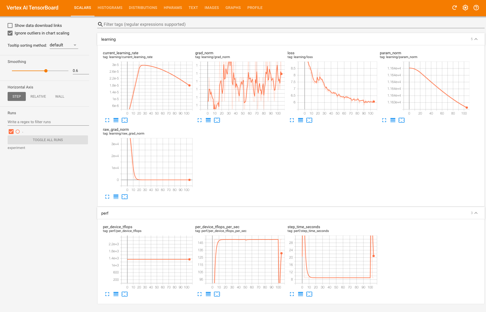

JobSet API Examples¶
This folder contains two sets of examples that demonstrate how to configure and execute training workloads using the JobSet and Kueue APIs.
- THe
TPU Hello Worldfolder offers examples for exploring different data and model parallelism strategies in both single-slice and multi-slice TPU configurations. - The MaxText section provides examples of both single-slice and multi-slice pre-training for a MaxText model with 6.5 billion parameters.
We utilize Kustomize to streamline the customization of JobSet resource YAML definitions.
The base_jobset folder houses a Kustomize base for JobSet configurations. The tpu_hello_world and maxtext folders contain Kustomize overlays that adapt the base configuration for use with the TPU Hello World and MaxText examples, respectively.
[!IMPORTANT] When configuring the examples, you will need to substitute the placeholders with values that match your specific environment. This includes the name of the Kubernetes namespace, the Kubernetes service account for use with the Workload Identity, the Artifact Registry path, the name of a Google Cloud Storage (GCS) bucket, and the full path of a TensorBoard instance. Bear in mind that, unless you made changes to the defaults during the environment setup or if you didn't utilize the automated setup, these resources were created with the following names.
- Kubernetes namespace -
tpu-training- Artifact Registry -
us-docker.pkg.dev/<YOUR_PROJECT_ID>/<YOUR_PREFIX>-training-images- Cloud Storage bucket -
<YOUR_PREFIX>-artifact-repository- Kubernetes service account -
wid-sa- TensorBoard instance full name - The format should be -
projects/<PROJECT_ID>/locations/<TENSORBOARD_REGION>/tensorboard/<TENSORBOARD_ID>. If you provisioned your environment using the automated setup, you can retrieve the TensorBoard name from the Terraform state, using theterraform output tensorboard_idcommand. You can also get the<TENSORBOARD_ID>from Vertex Experiments on the TensorBoard instances tab. The default display name for the TensorBoard instance created during the setup isTPU Training.
TPU Hello World¶
In the tpu_hello_world folder you will find examples of experimenting with different data and model parallelism strategies. The examples use the shardings.py script from MaxText that is designed to make experimentation with different parallelism options easy for both single slice and multislice settings. For more information about parallelism strategies and TPU Multislice refer to the Cloud TPU Multislice Overview article.
Configure the job¶
Set the current folder to tpu_hello_world
Replace <REPO_ROOT_DIR> with the full path to the root of the cloned repo.
Update namespace, images, and job suffix¶
Remember to update the values in the kustomization.yaml file to align with your specific environment.
Set the namespace:
Replace <NAMESPACE> with the name of the Kubernetes namespace that was created during the setup, where the Kueue local queue has been provisioned.
Set the Maxtext container image:
Replace <ARTIFACT_REGISTRY_PATH> with the path to your Artifact Registry.
Set the job ID suffix:
Replace <NAME_SUFFIX> with the suffix that will be appended to the default job name, which is tpu-helloworld. You can utilize the name suffix to prevent naming conflicts between concurrent jobs or to maintain completed jobs for tracking purposes.
Configure job topology and shardings.py parameters¶
Create the parameters.env file with the following key-value settings:
TPU_SLICE_TYPE=<TPU_SLICE_TYPE>
TPU_TOPOLOGY=<TPU_TOPOLOGY>
LOCAL_QUEUE=<LOCAL_QUEUE_NAME>
ICI_PARALLELISM=<ICI_PARALLELISM>
JOB_PARALLELISM=<JOB_PARALLELISM>
NUM_SLICE=<NUM_SLICES>
Replace the following values:
- <TPU_SLICE_TYPE> and <TPU_TOPOLOGY> with the type and topology of a TPU slice you want to run your job on. For TPU v4, use tpu-v4-podslice for <TPU_SLICE_TYPE>. For TPU v5e, use tpu-v5-lite-podslice. For TPU v5p, use tpu-v5p-slice. For TPU v4, define the topology in 3-tuples, for example 2x2x2. For TPU v5e, define the topology in 2-tuples. For TPU v5p, define the topology in 3-tuples. Refer to TPU on GKE documentation for detailed information on TPU configurations.
- <LOCAL_QUEUE_NAME> with the name of the local Kueue queue in your namespace. Recall that the default name as created during the setup is tpu-job-queue
- <ICI_PARALLELISM> with the value that is equal to the number of chips in the TPU slice
- <JOB_PARALLELISM> with the value that matches the number of TPU VMs in the TPU slice
- <NUM_SLICES> with the number of TPU slices on which you want to run the training job. Make sure to have at least this number of TPU node pools in your environment.
For your convenience, we have supplied two template files:
parameters.env.single_slicewith example settings tailored for a single slice job on a TPU v5e-16 slice.parameters.env.multi_slicewith example settings configured for a multi-slice job spanning two TPU v5e-16 slices.
Run the job¶
Monitor jobs¶
You can review execution logs using GKE Console or from the command line using kubectl.
-
To get the Kueue workloads:
-
To get the JobSets:
-
To get pods in your namespace, including pods started by your workload:
[!NOTE] If your workload failed than the above command will not return the workload's pods as the JobSet operator cleans up all failed jobs. If you want to review logs from the failed workload use GKE Console.
- To display logs for a pod:
Once the job is completed successfully, you will see a message similar to the following:
average time: 0.4840158, timings (seconds) [0.484098, 0.483838, 0.484114, 0.484056, 0.483973]
time is 0.4840158 seconds, TFLOP is 105.553116266496, TFLOP/s is 218.07783189411586
- To remove your workload and all resources that it created execute:
MaxText pre-training¶
The maxtext folder contains examples of pre-training a MaxText 8 billion parameters model on the English C4 dataset.
The maxtext/jobset-spec-patch.yaml file includes overrides for the base JobSet configuration. This file configures a JobSet resource with two job templates: one named slice for starting the MaxText trainer and another named tensorboard for launching the TensorBoard uploader.
The tensorboard job is responsible for uploading TensorBoard logs generated during the MaxText training job to a Vertex AI TensorBoard instance.
Runtime parameters for both the MaxText trainer and the TensorBoard uploader are specified through environment variables set within the maxtext-parameters ConfigMap.
Configure the job¶
Set the current folder to maxtext
Replace <REPO_ROOT_DIR> with the full path to the root of the cloned repo.
Update namespace, images, and job suffix¶
Remember to update the values in the kustomization.yaml file to align with your specific environment.
Set the namespace:
Replace <NAMESPACE> with the name of the Kubernetes namespace that was created during the setup, where the Kueue local queue has been provisioned.
Set the Maxtext container image:
Replace <ARTIFACT_REGISTRY_PATH> with the path to your Artifact Registry.
Set the job ID suffix:
Replace <NAME_SUFFIX> with the suffix that will be appended to the default job name, which is maxtext-run. You can utilize the name suffix to prevent naming conflicts between concurrent jobs or to maintain completed jobs for tracking purposes.
Configure job topology and MaxText trainer parameters¶
Create the parameters.env file with the following key-value settings:
TPU_SLICE_TYPE=<TPU_SLICE_TYPE>
TPU_TOPOLOGY=<TPU_TOPOLOGY>
LOCAL_QUEUE=<LOCAL_QUEUE_NAME>
ICI_PARALLELISM=<ICI_PARALLELISM>
JOB_PARALLELISM=<JOB_PARALLELISM>
NUM_SLICES=<NUM_SLICES>
BASE_OUTPUT_DIRECTORY=<BASE_OUTPUT_DIRECTORY>
RUN_NAME=<RUN_NAME>
TENSORBOARD_NAME=<TENSORBOARD_NAME>
DATASET_PATH=<DATASET_PATH>
ARGS=<ARGS>
LIBTPU_INIT_ARGS=<LIBTPU_INIT_ARGS>
Replace the following values:
- <TPU_SLICE_TYPE> and <TPU_TOPOLOGY> with the type and topology of a TPU slice you want to run your job on. For TPU v4, use tpu-v4-podslice for <TPU_SLICE_TYPE>. For TPU v5e, use tpu-v5-lite-podslice. For TPU v5p, use tpu-v5p-slice. For TPU v4, define the topology in 3-tuples, for example 2x2x2. For TPU v5e, define the topology in 2-tuples. For TPU v5p, define the topology in 3-tuples. Refer to TPU on GKE documentation for detailed information on TPU configurations.
- <LOCAL_QUEUE_NAME> with the name of the Kueue local queue in your namespace. Recall that the default name as created during the setup is tpu-job-queue
- <ICI_PARALLELISM> with the value that is equal to the number of chips in the TPU slice
- <JOB_PARALLELISM> with the value that matches the number of TPU VMs in the TPU slice
- <NUM_SLICES> with the number of TPU slices on which you want to run the training job. Make sure to have at least this number of TPU node pools in your environment.
- <BASE_OUTPUT_DIRECTORY> with the Cloud Storage location for checkpoints and logs. You can use the bucket created during the setup.
- <DATASET_PATH> with the Cloud Storage location of the C4 dataset. Specify the Cloud Storage location of the C4 dataset, excluding the c4 folder name in the path. As part of the setup for the examples' prerequisites, the C4 dataset is copied to the gs://<ARTIFACT_BUCKET>/datasets/c4 location.
- <RUN_NAME> with the MaxText run name. MaxText will use this value to name the folders for checkpoints and TensorBoard logs in the <BASE_OUTPUT_DIRECTORY>. If you want to restart from a previously set checkpoint set this to the run name used for the previous run. Although not required it may be convenient to use the same name as the <NAME_SUFFIX>.
- <TENSORBOARD_NAME> with the fully qualified name of the TensorBoardr instance to use for a training run tracking.
- <WID_KSA> with the name of Kubernetes service account to use for the Workload Identity.
- <ARGS> with any additional parameters you want to pass to the MaxText trainer. Refer to the below notes and the MaxText documentation for more info.
- <LIBTPU_INIT_ARGS> with libtpu and XLA compiler settings. Refer to the below notes and the MaxText documentation for more info
The MaxText trainer MaxText/train.py accepts a number of command line parameters that define a training regimen and model architecture. The required parameters are run_name, base_output_directory, and dataset_path. Other parameters are optional with the default values set in the MaxText config file.
The necessary parameters are configured through the RUN_NAME, BASE_OUTPUT_DIRECTORY, and DATASET_PATH fields, while optional ones are set in the ARGS field within the parameters.env file.
For both single slice and multi-slice job types, you can use the ARGS field to adjust training regimen parameters, including training steps, batch size, ICI settings, DCN parallelization settings, and parameters governing the model architecture.
We've included example settings for a pretraining task for a ~8 billion parameter model on TPU v5e-16 pods. We also encourage you to experiment with your own settings.
The example settings for a single slice training job are found in the parameters.env.single_slice_8B file, while the example settings for a multi-slice training job are provided in the parameters.env.multi_slice_8B file.
[!WARNING] If you use the templates, do not forget to update them with the settings matching your environment.
Run the job¶
Monitor jobs¶
You can monitor the runs using the techniques described in the tpu_hello_world section. Since both single slice and multislice workloads upload TensorBoard metrics generated by the MaxText trainer to Vertex AI TensorBoard, you can also monitor the run - in real time - through Vertex Experiments. The experiment name that will receive the metrics is the same as the value configured in RUN_NAME

- To remove your workload and all resources that it created execute: